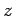

Nächste Seite: height_function Aufwärts: Public member von Fluid Vorherige Seite: set_height_function Inhalt
void Fluid::set_height_function_normal(Vektor (*height_function_normal)(float x, float y))

-Komponente können zu unerwartetem Verhalten, bis hin zum Absturz der Software führen. Andererseits können mit Normalen, die nicht zur set_height_function übergebenen Funktion passen evtl. erwünschte Effekte oder Vereinfachungen erzielt werden.